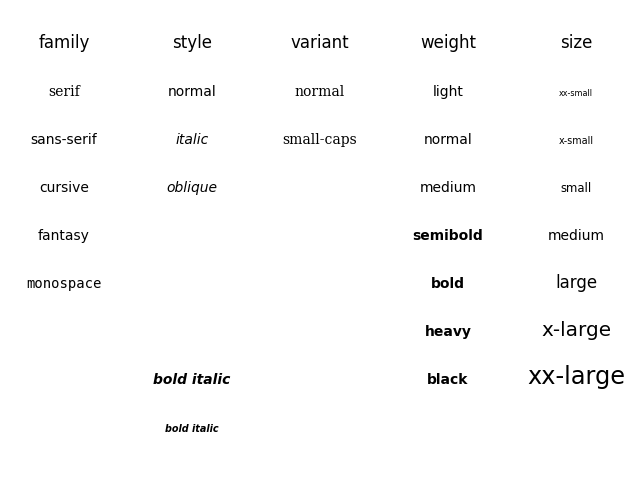

Note
Click here to download the full example code
Fonts demo (object-oriented style)¶
Set font properties using setters.
See Fonts demo (kwargs) to achieve the same effect using kwargs.
from matplotlib.font_manager import FontProperties
import matplotlib.pyplot as plt
font0 = FontProperties()
alignment = {'horizontalalignment': 'center', 'verticalalignment': 'baseline'}
# Show family options
families = ['serif', 'sans-serif', 'cursive', 'fantasy', 'monospace']
font1 = font0.copy()
font1.set_size('large')
t = plt.figtext(0.1, 0.9, 'family', fontproperties=font1, **alignment)
yp = [0.8, 0.7, 0.6, 0.5, 0.4, 0.3, 0.2]
for k, family in enumerate(families):
font = font0.copy()
font.set_family(family)
t = plt.figtext(0.1, yp[k], family, fontproperties=font, **alignment)
# Show style options
styles = ['normal', 'italic', 'oblique']
t = plt.figtext(0.3, 0.9, 'style', fontproperties=font1, **alignment)
for k, style in enumerate(styles):
font = font0.copy()
font.set_family('sans-serif')
font.set_style(style)
t = plt.figtext(0.3, yp[k], style, fontproperties=font, **alignment)
# Show variant options
variants = ['normal', 'small-caps']
t = plt.figtext(0.5, 0.9, 'variant', fontproperties=font1, **alignment)
for k, variant in enumerate(variants):
font = font0.copy()
font.set_family('serif')
font.set_variant(variant)
t = plt.figtext(0.5, yp[k], variant, fontproperties=font, **alignment)
# Show weight options
weights = ['light', 'normal', 'medium', 'semibold', 'bold', 'heavy', 'black']
t = plt.figtext(0.7, 0.9, 'weight', fontproperties=font1, **alignment)
for k, weight in enumerate(weights):
font = font0.copy()
font.set_weight(weight)
t = plt.figtext(0.7, yp[k], weight, fontproperties=font, **alignment)
# Show size options
sizes = ['xx-small', 'x-small', 'small', 'medium', 'large',
'x-large', 'xx-large']
t = plt.figtext(0.9, 0.9, 'size', fontproperties=font1, **alignment)
for k, size in enumerate(sizes):
font = font0.copy()
font.set_size(size)
t = plt.figtext(0.9, yp[k], size, fontproperties=font, **alignment)
# Show bold italic
font = font0.copy()
font.set_style('italic')
font.set_weight('bold')
font.set_size('x-small')
t = plt.figtext(0.3, 0.1, 'bold italic', fontproperties=font, **alignment)
font = font0.copy()
font.set_style('italic')
font.set_weight('bold')
font.set_size('medium')
t = plt.figtext(0.3, 0.2, 'bold italic', fontproperties=font, **alignment)
font = font0.copy()
font.set_style('italic')
font.set_weight('bold')
font.set_size('x-large')
t = plt.figtext(-0.4, 0.3, 'bold italic', fontproperties=font, **alignment)
plt.show()
Keywords: matplotlib code example, codex, python plot, pyplot Gallery generated by Sphinx-Gallery